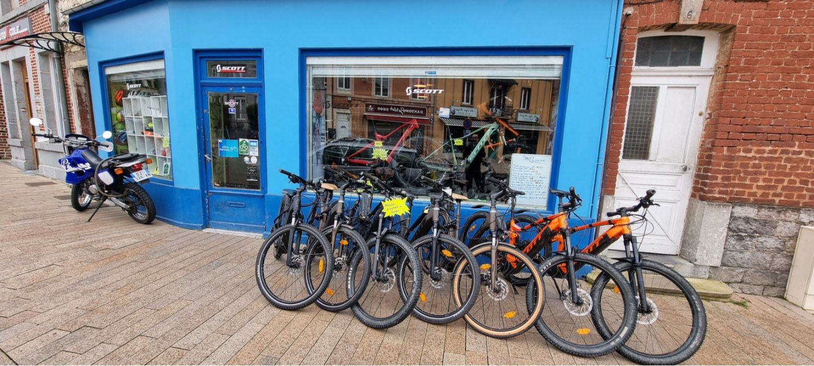
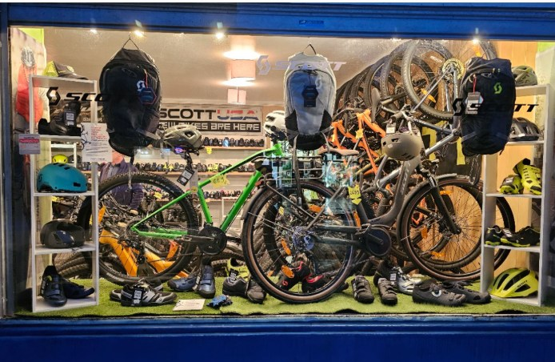
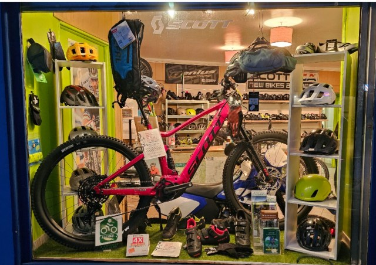
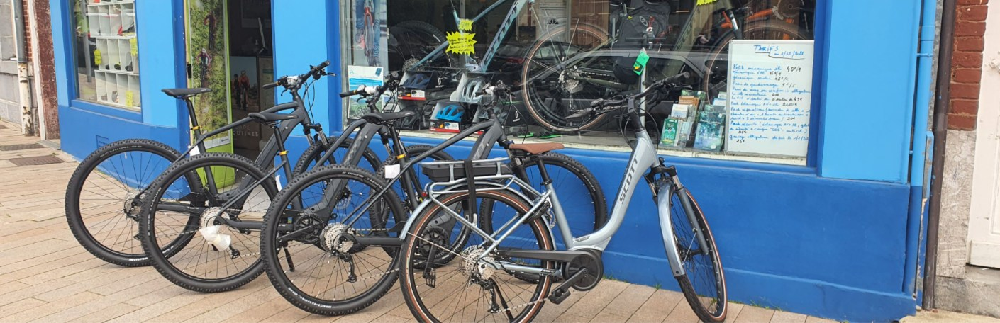
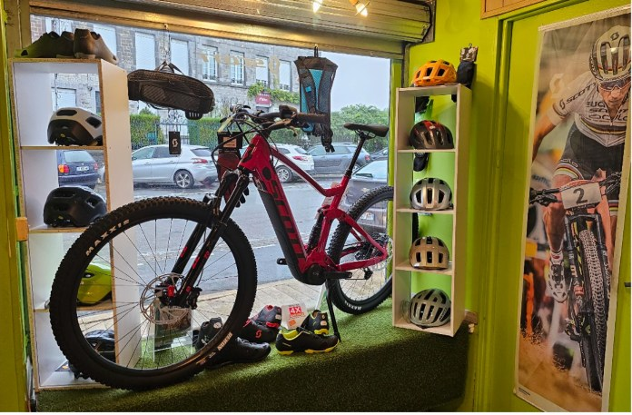
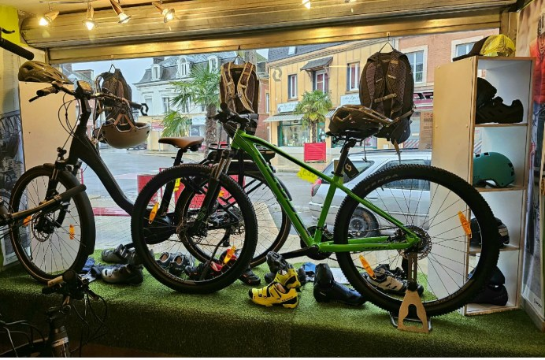

10 avenue Danton, Revin
Des vélos, et quelqu'un qui sait les réparer.
Vente de vélos SCOTT, musculaires et à assistance électrique. Réparation toutes marques. Atelier agréé par le service Bosch eBike. Ouvert du mardi au samedi, avenue Danton.
08500 Revin
07 49 28 57 56
L'atelier existe depuis le 10 mai 1993.
Sur Google, 105 avis.
De recommandations sur Facebook, 118 avis.
Site internet à ce jour, nulle part.
L'atelier
Toutes marques, assistance électrique comprise.
Repris mot pour mot de ce qui est annoncé aujourd'hui en ligne.
Vente
Vélos musculaires et à assistance électrique SCOTT, du VTT au vélo de ville.
Réparation
Toutes marques, qu'il s'agisse d'un vélo acheté ici ou ailleurs.
Service Bosch
L'atelier est référencé par Bosch eBike comme service indépendant de la marque.
Équipement
Casques, chaussures, sacs à dos et accessoires, en vitrine et en magasin.
À compléter avec vous : vos tarifs d'atelier. Ils sont écrits à la main sur un tableau en vitrine, mais illisibles de l'extérieur et invisibles en ligne.
Le magasin
Deux vitrines, et un atelier derrière.
Les photos publiées sur votre fiche Google, reprises telles quelles.





À récupérer chez vous : vos photos d'origine, et surtout des photos de l'atelier et des réparations. Il n'y a aujourd'hui aucune image du travail lui-même.
Les avis
Ils viennent d'ailleurs, et ils reviennent.
« Des gens très sympathiques et serviables ! La chaîne de l'un de nos vélos était cassée, empêchant tout le groupe scout de 45 personnes de rouler. Malgré le travail acharné du mécanicien, nous avons été aidés très rapidement. »
Avis Google, visite en août« Great helpful and friendly owners. Proper equipment and very decent mountain bikes. The owners will guide you to the start of your chosen route. »
Avis Google, en anglaisLes mots qui reviennent le plus dans vos 105 avis : location, VTT, itinéraire, VAE, prix, passionné. Une partie de vos clients écrit en anglais et en néerlandais.
Le magasin
Horaires d'ouverture
14h00 à 19h00
Fermé l'après-midi
14h00 à 17h30
Avant de passer
Une réparation se cale au téléphone.
Pour une révision, un changement de transmission ou un diagnostic sur un moteur électrique, mieux vaut appeler avant de venir. L'atelier est tenu par une à deux personnes, et une place dans la file se réserve.
À trancher avec vous : deux sources en ligne donnent vos horaires, et elles ne disent pas la même chose. Le site de la ville de Revin annonce 14h à 19h le mardi et le mercredi, la fiche revendeur de Bosch annonce 14h à 18h30. Un site, c'est une seule version à corriger.
Contact
Passer, appeler, écrire.
L'atelier
L'entreprise
À confirmer : la fiche revendeur de Bosch annonce toujours la location de vélos à assistance électrique. Si cette activité est arrêtée, c'est à corriger chez eux comme ici.